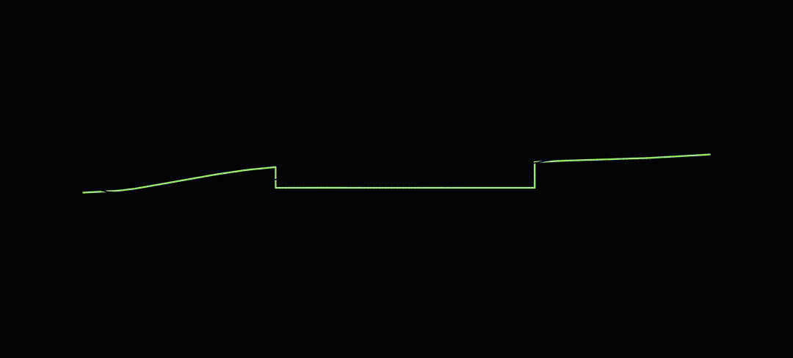
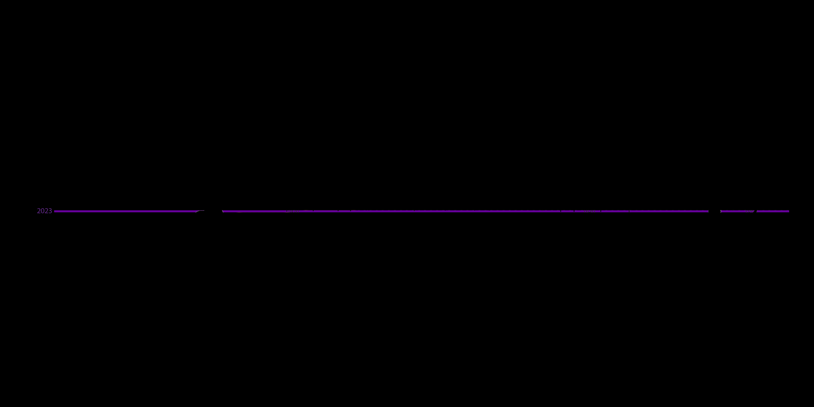
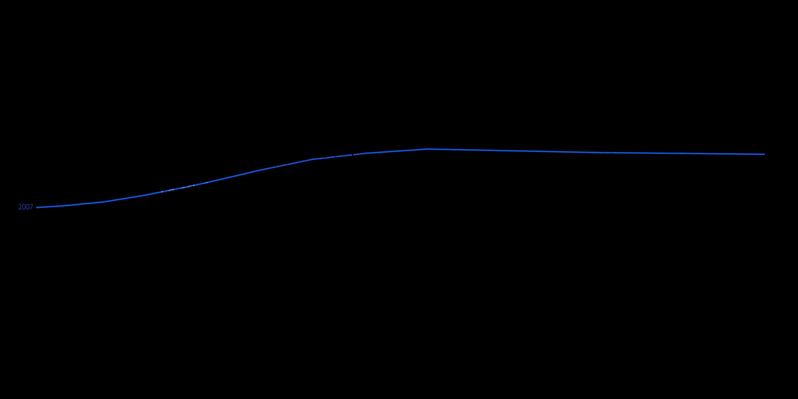
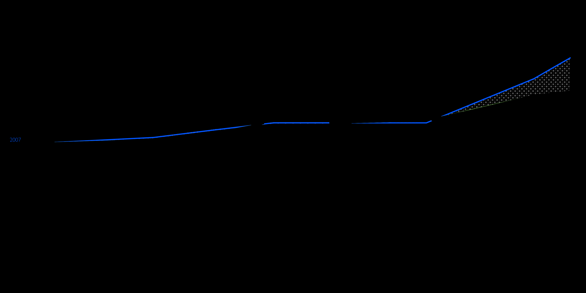
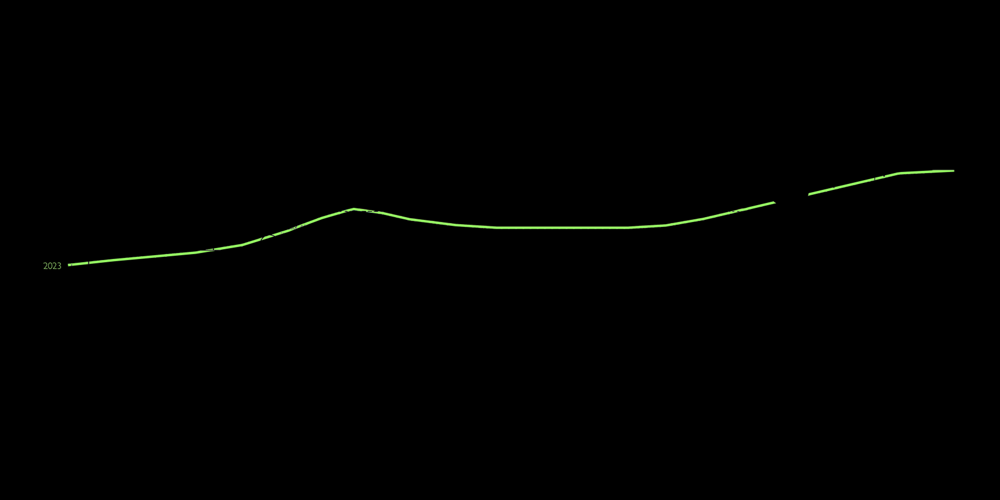
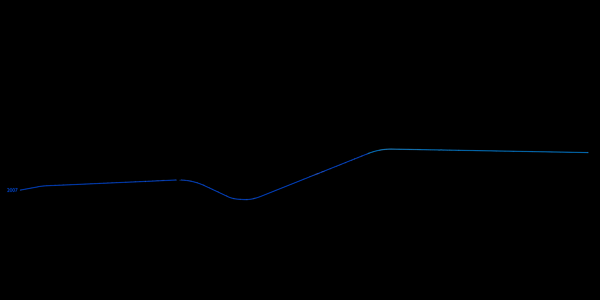

The first context is what we call the sterilized. This refers to Bilkent City Hospital and its immediate surroundings. It is a highly controlled, concrete and organized environment. 2.024.470 m³ soil has been excavated for Hospital Building and roads.


The third context is the incomplete: The arboretum and the Botanical Park surroundings. There is observed uncontrolled growth, reed formations, spontaneous vegetation, and unexpected encounters between steppe ecologies and transported landscape. This became a particularly critical site for us.




The second context is the refurbished, which particularly refers to Beytepe Pond and unfinished surrounding areas. Here is a designed landscape. Species are selected, labeled, and intentionally organized. However, within a dispersion from this environment, we observed unexpected growth patterns and discontinuities that appear to emerge alongside displaced soil such as reeds, land snails, and dead nettle.
